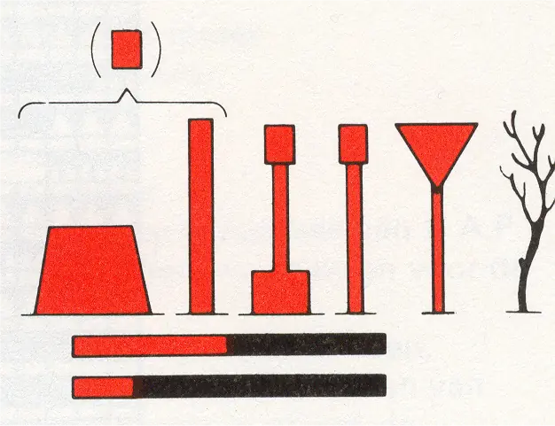
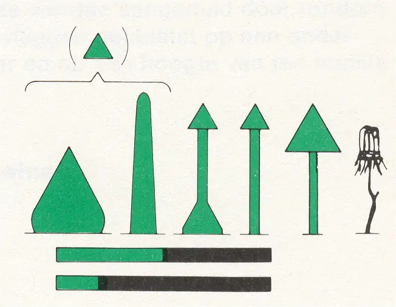
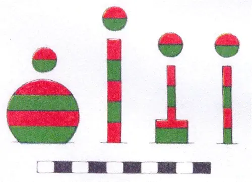
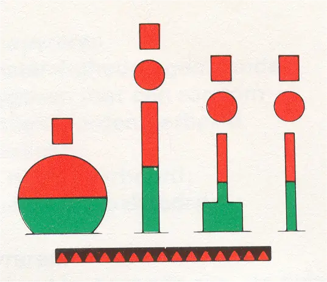
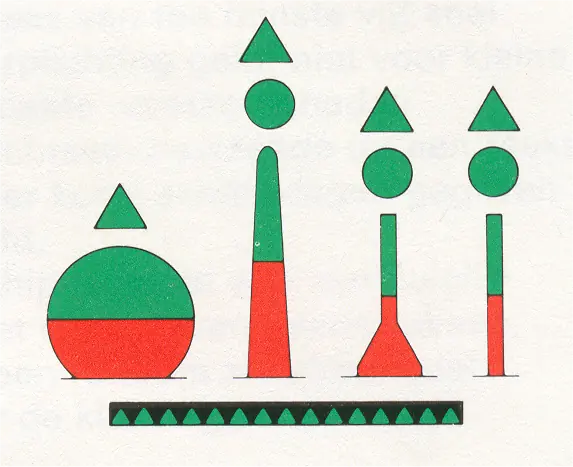
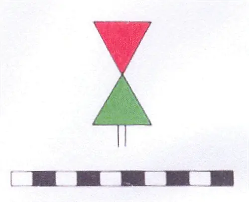

2.1 Hoofdmarkering
2.1.1 Rechterzijde
vorm: | stompe boei of ton, sparboei, drijfbaken, kopbaken, walbaken (driehoekig teken met de punt naar beneden gericht) of los steekbaken |  |
kleur: | rood | |
topteken:1 | rode cilinder | |
licht:1 | rood isofaselicht of lang schitterlicht : | |
kenteken:2 | de beginletter(s) van de naam van het vaarwater en een even nummering; voor oevermarkering een opeenvolgende nummering, onafhankelijk van de kleur | b.v. HD 4, HD 6 of 1, 2, 4, etc. |
1 indien aanwezig
2 m.u.v. kop-, steek- en walbakens
2.1.2 Linkerzijde
vorm: | spitse boei of ton, sparboei, drijfbaken, kopbaken, walbaken (driehoekig teken met de punt naar boven gericht) of bijeengebonden steekbaken |  |
kleur: | groen | |
topteken:1 | groene kegel met de top naar boven gericht | |
licht:1 | groen isofaselicht of lang schitterlicht | |
kenteken:2 | kenteken de beginletter(s) van de naam van het vaarwater en een oneven nummering; voor oevermarkering een opeenvolgende nummering, onafhankelijk van de kleur | b.v. V 3, V 5 of 3, 5, 6, etc. |
1 indien aanwezig
2 m.u.v. kop-, steek- en walbakens
2.1.3 Splitsingen en kruisingen 3- in de Waddenzee wordt thans de markering volgens het Maritieme Betonningsstelsel A (IALA) toegepast.
Deze markering is aangebracht op de scheiding of samenkomst van vaarwaters. De drijvende markering is altijd voorzien van een topteken ter onderscheiding van de markering veilig vaarwater (6.3).
a. Vaarwaters van gelijk belang
vorm: | bolvormige boei of ton, sparboei, drijfbaken, of kopbaken |  |
kleur: | rood-groen horizontaal gestreept | |
topteken: | rood-groene bol | |
licht1: | wit snel isofaselicht (2 s) | |
kenteken2: | de beginletter(s) van elk vaarwater in alfabetische volgorde met het volgnummer in de markeringsrij. |
1 indien aanwezig
2 m.u.v. kop-, steek- en walbakens
b. Hoofdvaarwater links
3 <<van boven naar beneden>> gerekend.
vorm: | bolvormige boei of ton, sparboei, drijfbaken, kopbaken of walbaken |  |
kleur: | rood boven en groen onder | |
topteken: | rode cilinder, op sparboei, drijf- en kopbaken tevens rode bol | |
licht:1 | rood flikkerlicht | |
kenteken:2 | de beginletters met een nummer van beide: vaarwaters, hoofdvaarwater eerst genoemd. | b.v. HV KG 12 9 |
1 indien aanwezig
2 m.u.v. kop-, steek- en walbakens
c. Hoofdvaarwater rechts
3 <<van boven naar beneden>> gerekend.
vorm: | bolvormige boei of ton, sparboei, drijfbaken, kopbaken of walbaken |  |
kleur: | groen boven en rood onder | |
topteken: | groene kegel met de top naar boven gericht, op sparboei, drijf- en kopbaken tevens groene bol | |
licht:1 | groen flikkerlicht | |
kenteken:2 | de beginletters met een nummer van beide vaarwaters, hoofdvaarwater eerst genoemd. | b.v. VG- HV 1 14 |
1 indien aanwezig
2 m.u.v. kop-, steek- en walbakens
d. Splitsingspunt
vorm: | walbaken (driehoekig rood teken met de punt naar beneden gericht boven een driehoekig groen teken met de punt naar boven gericht) |  |
licht1: | wit snel isofaselicht (2s) | |
kenteken1: | nummering aansluitend aan laterale walbakens; voor oevermarkering een nummering aansluitend aan die van de rechter- of de linkerzijde. |